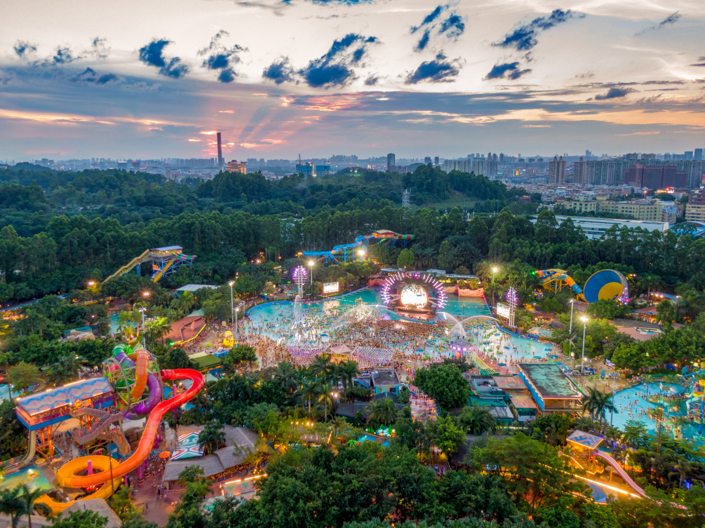
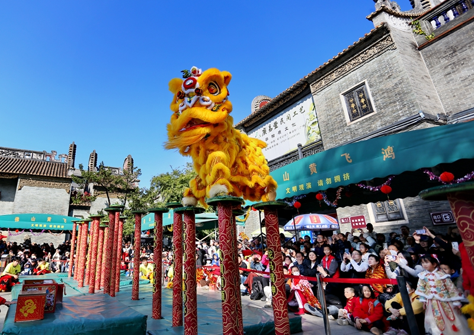
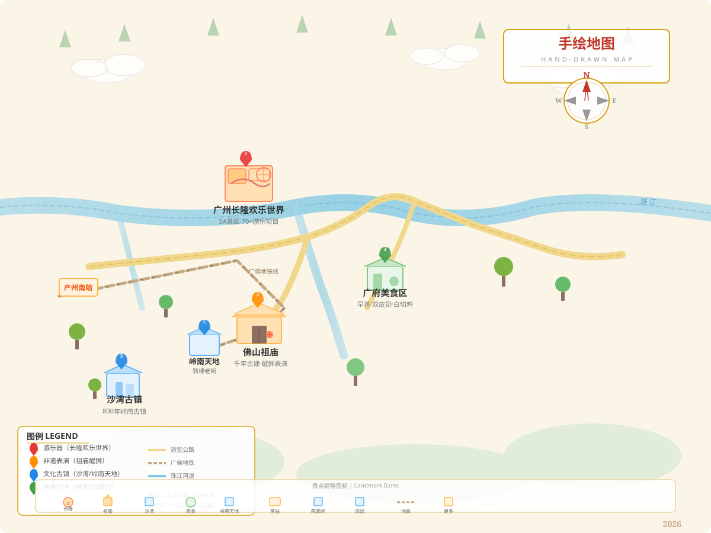

为什么选择广州长隆+佛山祖庙
2026.07全球过山车之王·垂直过山车
吉尼斯十环过山车
70+全球领先游乐项目
5A景区·70+项目·暑期夜场
国家级非遗·黄飞鸿纪念馆
早茶·白切鸡·双皮奶·肠粉
7-8月30-38°C·满足炎热需求
佛山祖庙门票仅20元
每天3场免费醒狮表演
高桩采青·梅花桩·武术
中高考生半价仅10元
广佛地铁50分钟直达
广州长隆欢乐世界 · 全球过山车之王
Day 2
5A景区 · 70+全球领先项目
长隆欢乐世界位于广州番禺区，拥有"全球过山车之王"垂直过山车、吉尼斯世界纪录十环过山车、 火箭过山车、超级大摆锤等70多项全球领先游乐项目。暑期加开夜场至21:00/22:00， 森巴酷爽嘉年华全天候玩水派对+夜场演艺，从早10点玩到晚9点，一票通玩。
刺激路线推荐
营业：暑期10:00-21:00/22:00
双人票：500元（比2张青少年票更划算）
交通：地铁3/7号线汉溪长隆站E/D口
贴士：提前官方APP购票，现场无优惠
广东文旅消费券：美团App搜"暑假当然来广东"最高省500元
佛山祖庙 · 国家级非遗醒狮表演
Day 3
20元门票 · 每天3场免费醒狮
佛山祖庙已有近千年历史，是岭南古建筑集大成之作。黄飞鸿纪念馆醒狮场每天上演 正宗南派醒狮——高桩采青、梅花桩跳跃，伴着铿锵锣鼓，雄狮腾跃翻滚。 2006年入选首批国家级非遗。醒狮表演免费观看（含在20元门票内）， 还有万福台粤剧演出、叶问堂咏春展，一站式感受岭南文化精髓。
醒狮表演时间
开放：8:30-18:00（17:30停止入园）
交通：广佛线祖庙站D口步行300米
广州出发：地铁广佛线约50分钟
注意：黄飞鸿纪念馆空调改造中（5-12月），醒狮表演正常进行
贴士：提前10分钟到场占位
周边：岭南天地（免费）· 梁园（10元）· 应记云吞面
广府不辣美食 · 从早茶到宵夜
人均30吃到撑广式早茶
虾饺·凤爪·烧卖
叉烧包·肠粉·金钱肚
人均50-80元
陶陶居/点都德/广州酒家
白切鸡
皮爽肉滑·骨都有味
清平饭店传承
半只约79元
广州第一鸡
肠粉
布拉肠粉·薄如蝉翼
鲜虾肠+艇仔粥
人均20元
银记肠粉/荔银肠粉
双皮奶
水牛奶制作·两层奶皮
原味12元
民信老铺（佛山祖庙旁）
顺德大良起源地
鲜虾云吞面
竹升面弹牙爽口
鲜虾云吞大颗饱满
人均15元
应记云吞面（佛山）
煲仔饭
腊味饭锅巴焦香
现点现煲
人均20-30元
超记煲仔饭
深井烧鹅
皮脆肉嫩·汁水四溅
佛山柴火烧鹅
人均50元
佛山排名第一农庄
陈添记鱼皮
爽脆鱼皮·祖传秘方
配艇仔粥+猪肠粉
人均25元
上下九老店
姜撞奶
现撞姜汁+水牛奶
辣度可选·暖胃养生
人均12元
沙湾牛奶皇后
全部不辣！广府菜以清、鲜、爽、嫩、滑为特色，白切、清蒸、煲炖为主，完美契合不吃辣需求
预算明细 · 1万元预算绰绰有余
5天4晚/2人* 1万元预算绰绰有余，可升级为品质出行（长隆双园联票+4钻酒店+每日早茶）。广东文旅消费券7-8月可再省最高500元。
** 长隆双人票500元比单买2张青少年票更划算。中高考生凭准考证享更多优惠。
5天4晚行程速览
Day by Day抵达广州 · 入住番禺
高铁/飞机抵达广州 → 地铁至汉溪长隆站 → 入住周边民宿 → 傍晚番禺万达觅食：银记肠粉+煲仔饭 → 早早休息备战明日
长隆欢乐世界全天
10:00开园 → 北门进：十环过山车→火箭过山车→自由落体 → 午餐园区内 → 下午：垂直过山车→超级大摆锤→急流勇进 → 可选夜场至21:00 → 南门出 → 周边粤菜晚餐
佛山祖庙醒狮 · 岭南天地
地铁广佛线→祖庙站 → 10:00醒狮表演（第一场）→ 祖庙古建筑群+叶问堂 → 应记云吞面午餐 → 岭南天地漫步 → 14:15可选看第二场醒狮 → 民信双皮奶 → 梁园 → 天海酒家白切鸡晚餐 → 返回广州
广州早茶 · 沙湾古镇 · 老城区
09:00陶陶居/点都德早茶 → 沙湾古镇（800年岭南古镇·蚝壳墙）→ 沙湾姜埋奶 → 陈家祠（岭南建筑瑰宝）→ 上下九/北京路步行街 → 陈添记鱼皮+银记肠粉晚餐
沙面岛 · 返程
上午沙面岛（免费欧陆风情）→ 珠江边散步 → 惠食佳啫啫煲午餐 → 购手信：鸡仔饼·老婆饼 → 广州南站/白云机场返程 → 满载岭南记忆回家
景区手绘导览地图
HAND-DRAWN MAP
手绘样式对标国风卡通扁平模板，完整标注景点、游览线路、四色打卡点位及图例